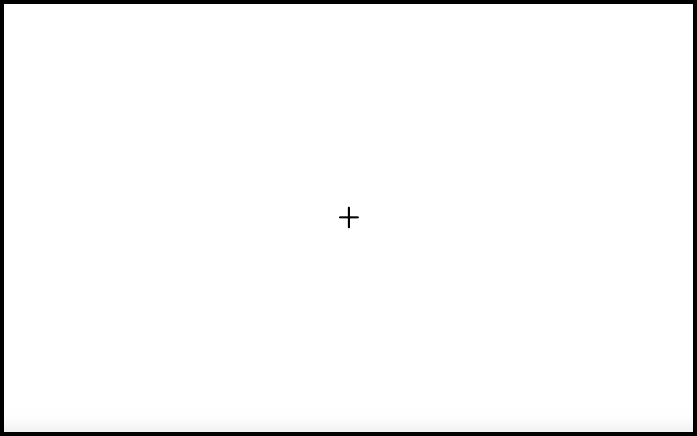
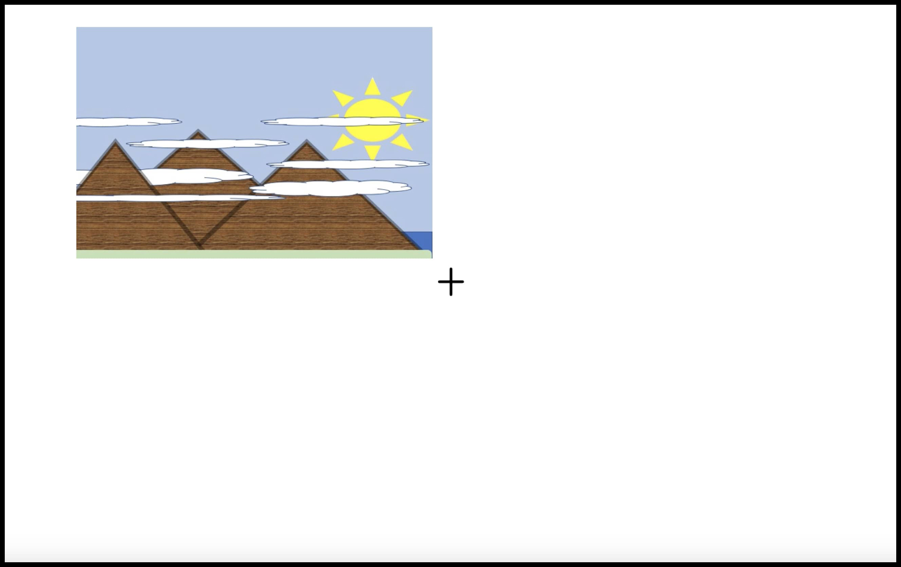
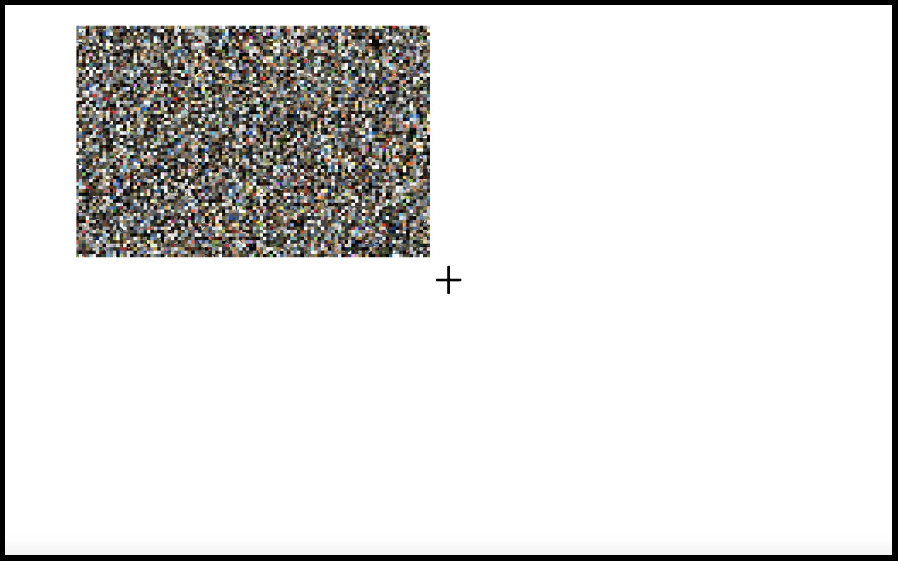
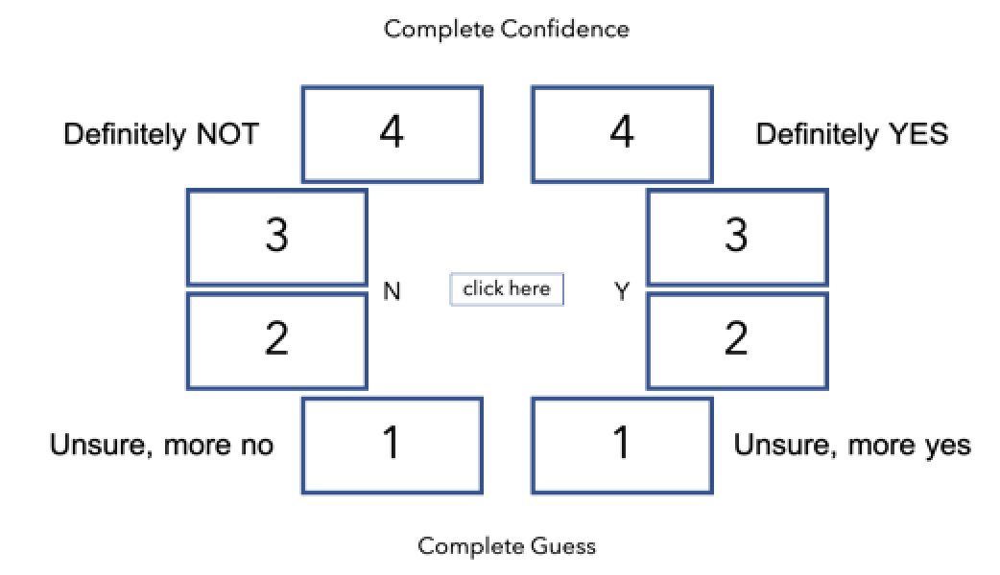
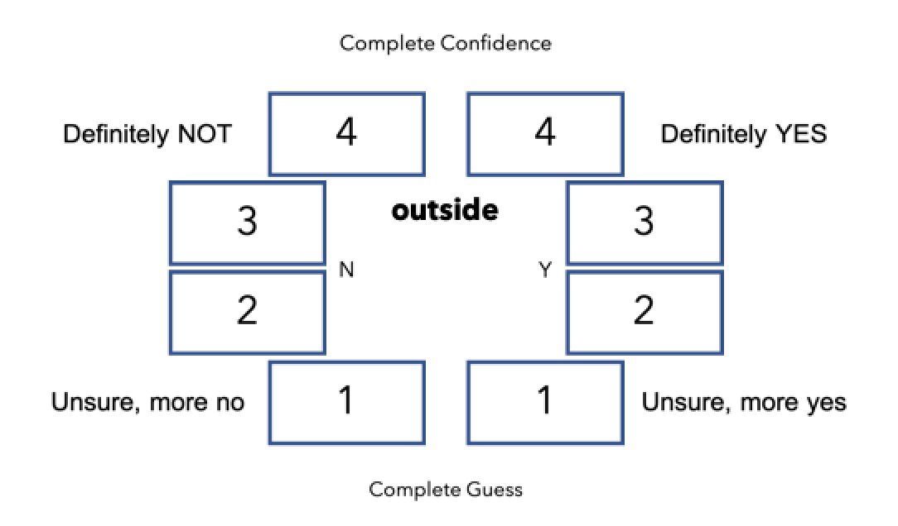

Instructions
Let's examine the experiment. Your task is to judge 10 descriptors for 40 images.
For your reference, here are the steps. (Scroll down for more details)
-
First, you will see a cross-hair at the center of the screen. Please focus on the cross and do not move your eyes.

-
After a few moments, an image will flash on the screen, (in one of the four quadrants of the screen) before it's covered by a mask. Images will only be shown for a very short time (less than half a second).
 
-
When the mask disappears, a response screen will appear. Activate the task by clicking the center button. Once you click the button, a word will appear that you think either does, or does not, describe part of the image.

-
Your task is to judge whether the word is related to the image or not and how confident you are. The left half of the responses mean No [ N ] the word does not describe the image. The right half means Yes [ Y ]. The more certain you feel about your answer, the higher the number you should choose (Min = 1, Max = 4).

-
In the example above, the given word [ outside ] is clearly in the image. You would choose response 4 on the right side to indicate it is definitely related to the image. Another word like [ disco ] is definitely NOT related to the image and you would choose the 4 on the left side to indicate this.
Other words may be less clear, and will require your best judgement. Also, the image may be flashed too quickly for you to make out clear objects. Rely on your impressions of the image to guide your answers.
When you press the [Space] bar, you will be given 3 practice trials.